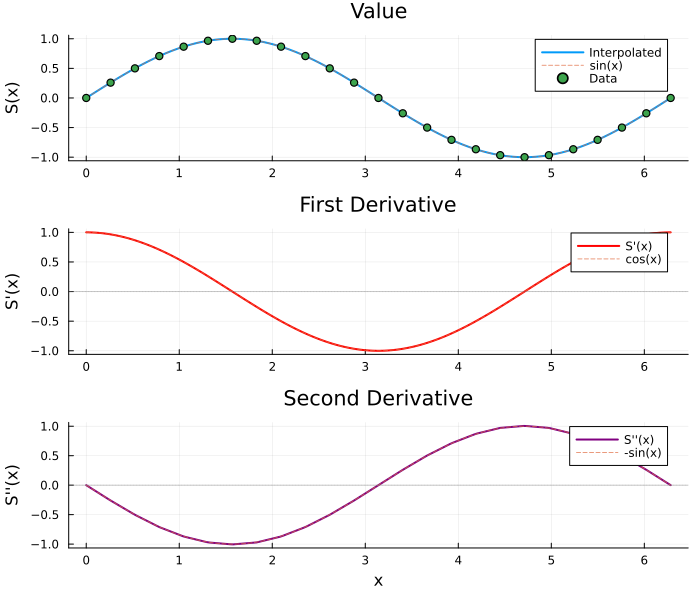
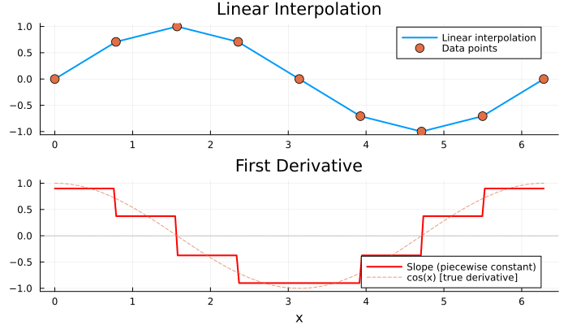
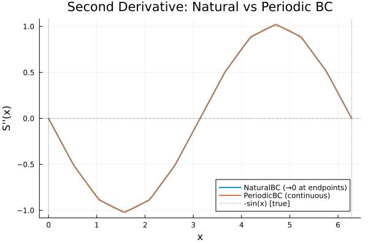
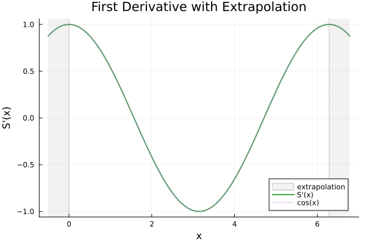

Derivatives
FastInterpolations.jl provides analytical derivatives for both linear and cubic interpolation. No finite difference approximation needed—derivatives are computed directly from the spline coefficients.
Overview
| Interpolation | First Derivative | Second Derivative |
|---|---|---|
| Linear | Piecewise constant (slope) | Always zero |
| Cubic | Smooth (C¹ continuous) | Continuous (C² continuous) |
One-Shot API
Use the deriv keyword argument:
using FastInterpolations
x = range(0.0, 2π, 50)
y = sin.(x)
# Value (default)
val = cubic_interp(x, y, 1.0)
# First derivative
d1 = cubic_interp(x, y, 1.0; deriv=1)
# Second derivative
d2 = cubic_interp(x, y, 1.0; deriv=2)
println("At x = 1.0:")
println(" Value: ", round(val, digits=6), " (true: ", round(sin(1.0), digits=6), ")")
println(" 1st deriv: ", round(d1, digits=6), " (true: ", round(cos(1.0), digits=6), ")")
println(" 2nd deriv: ", round(d2, digits=6), " (true: ", round(-sin(1.0), digits=6), ")")At x = 1.0:
Value: 0.841471 (true: 0.841471)
1st deriv: 0.540316 (true: 0.540302)
2nd deriv: -0.841529 (true: -0.841471)Vector Evaluation
xq = range(0.0, 2π, 100)
# Evaluate derivatives at multiple points
values = cubic_interp(x, y, xq)
first_derivs = cubic_interp(x, y, xq; deriv=1)
second_derivs = cubic_interp(x, y, xq; deriv=2)
println("First 5 first derivatives: ", round.(first_derivs[1:5], digits=4))First 5 first derivatives: [1.0, 0.998, 0.992, 0.9819, 0.9679]In-Place Evaluation
out = zeros(5)
xq_small = [0.5, 1.0, 1.5, 2.0, 2.5]
cubic_interp!(out, x, y, xq_small; deriv=1)
println("In-place first derivatives: ", round.(out, digits=4))In-place first derivatives: [0.8776, 0.5403, 0.0708, -0.4161, -0.8011]Interpolant API
For repeated evaluation, use deriv1() and deriv2() wrapper functions:
itp = cubic_interp(x, y)
# Create derivative views
d1 = deriv1(itp) # First derivative
d2 = deriv2(itp) # Second derivative
# Scalar evaluation
println("d1(1.0) = ", round(d1(1.0), digits=6))
println("d2(1.0) = ", round(d2(1.0), digits=6))d1(1.0) = 0.540316
d2(1.0) = -0.841529Broadcasting
Derivative views support broadcasting for efficient vector evaluation:
xq = range(0.0, 2π, 100)
# Broadcast over query points
first_derivs = d1.(xq)
second_derivs = d2.(xq)
println("Broadcast results (first 5): ", round.(first_derivs[1:5], digits=4))Broadcast results (first 5): [1.0, 0.998, 0.992, 0.9819, 0.9679]Fused Broadcast
Derivative views work seamlessly with Julia's fused broadcast:
# Fused broadcast example
result = @. 2.0 * d1(xq) + d2(xq)
println("Fused broadcast (first 5): ", round.(result[1:5], digits=4))Fused broadcast (first 5): [2.0, 1.9326, 1.8571, 1.7747, 1.6844]Visualization
using Plots
x = range(0.0, 2π, 25)
y = sin.(x)
itp = cubic_interp(x, y)
xq = range(0.0, 2π, 200)
p = plot(layout=(3,1), size=(700, 600), legend=:topright)
# Value
plot!(p[1], xq, itp.(xq), label="Interpolated", linewidth=2)
plot!(p[1], xq, sin.(xq), label="sin(x)", linestyle=:dash, alpha=0.7)
scatter!(p[1], x, y, label="Data", markersize=4)
title!(p[1], "Value")
ylabel!(p[1], "S(x)")
# First derivative
d1 = deriv1(itp)
plot!(p[2], xq, d1.(xq), label="S'(x)", linewidth=2, color=:red)
plot!(p[2], xq, cos.(xq), label="cos(x)", linestyle=:dash, alpha=0.7)
hline!(p[2], [0], color=:gray, linestyle=:dot, alpha=0.5, label=nothing)
title!(p[2], "First Derivative")
ylabel!(p[2], "S'(x)")
# Second derivative
d2 = deriv2(itp)
plot!(p[3], xq, d2.(xq), label="S''(x)", linewidth=2, color=:purple)
plot!(p[3], xq, -sin.(xq), label="-sin(x)", linestyle=:dash, alpha=0.7)
hline!(p[3], [0], color=:gray, linestyle=:dot, alpha=0.5, label=nothing)
title!(p[3], "Second Derivative")
ylabel!(p[3], "S''(x)")
xlabel!(p[3], "x")
p
Linear Interpolation Derivatives
Linear interpolation has piecewise constant first derivative (the slope of each segment):
x_lin = range(0.0, 2π, 9)
y_lin = sin.(x_lin)
# One-shot
slope = linear_interp(x_lin, y_lin, 1.0; deriv=1)
println("Slope at x=1.0: ", round(slope, digits=4))
# Interpolant
litp = linear_interp(x_lin, y_lin)
d1_lin = deriv1(litp)
println("Via interpolant: ", round(d1_lin(1.0), digits=4))Slope at x=1.0: 0.3729
Via interpolant: 0.3729xq = range(0.0, 2π, 200)
y_interp = linear_interp(x_lin, y_lin, xq)
y_deriv = linear_interp(x_lin, y_lin, xq; deriv=1)
p = plot(layout=(2,1), size=(700, 400))
plot!(p[1], xq, y_interp, label="Linear interpolation", linewidth=2)
scatter!(p[1], x_lin, y_lin, label="Data points", markersize=6)
title!(p[1], "Linear Interpolation")
plot!(p[2], xq, y_deriv, label="Slope (piecewise constant)", linewidth=2, color=:red)
plot!(p[2], xq, cos.(xq), label="cos(x) [true derivative]", linestyle=:dash, alpha=0.7)
hline!(p[2], [0], color=:gray, linestyle=:dot, alpha=0.5, label=nothing)
title!(p[2], "First Derivative")
xlabel!(p[2], "x")
p
deriv2(linear_itp) always returns 0.0, since linear segments have no curvature.
Derivatives with Boundary Conditions
Different boundary conditions affect derivative behavior at endpoints:
x = range(0.0, 2π, 13)
y = sin.(x)
xq = range(0.0, 2π, 200)
# Compare derivatives with different BC
itp_nat = cubic_interp(x, y; bc=NaturalBC())
itp_per = cubic_interp(x, y; bc=PeriodicBC())
d2_nat = deriv2(itp_nat)
d2_per = deriv2(itp_per)
p = plot(title="Second Derivative: Natural vs Periodic BC", xlabel="x", ylabel="S''(x)")
plot!(xq, d2_nat.(xq), label="NaturalBC (→0 at endpoints)", linewidth=2)
plot!(xq, d2_per.(xq), label="PeriodicBC (continuous)", linewidth=2)
plot!(xq, -sin.(xq), label="-sin(x) [true]", linestyle=:dash, alpha=0.5)
vline!([0, 2π], color=:gray, linestyle=:dot, alpha=0.5, label=nothing)
hline!([0], color=:black, linestyle=:dash, alpha=0.3, label=nothing)
Notice how NaturalBC forces the second derivative to zero at endpoints, while PeriodicBC maintains continuity.
Derivatives with Extrapolation
Derivatives work with all extrapolation modes:
x = range(0.0, 2π, 25)
y = sin.(x)
xq = range(-0.5, 2π + 0.5, 200)
itp = cubic_interp(x, y; extrap=:extension)
d1 = deriv1(itp)
p = plot(title="First Derivative with Extrapolation", xlabel="x", ylabel="S'(x)")
vspan!([-0.5, 0.0], alpha=0.1, color=:gray, label="extrapolation")
vspan!([2π, 2π + 0.5], alpha=0.1, color=:gray, label=nothing)
plot!(xq, d1.(xq), label="S'(x)", linewidth=2)
plot!(xq, cos.(xq), label="cos(x)", linestyle=:dash, alpha=0.7)
vline!([0, 2π], color=:gray, linestyle=:dot, alpha=0.5, label=nothing)
API Summary
| Method | Usage | Description |
|---|---|---|
cubic_interp(...; deriv=1) | One-shot | First derivative |
cubic_interp(...; deriv=2) | One-shot | Second derivative |
linear_interp(...; deriv=1) | One-shot | Piecewise constant slope |
deriv1(itp) | Interpolant | First derivative view |
deriv2(itp) | Interpolant | Second derivative view |
d1.(xq) | Broadcast | Vector evaluation |
See Also
- Cubic Overview: Cubic spline interpolation basics
- Linear Interpolation: Linear interpolation with derivatives
- Standard BC: How boundary conditions affect derivatives